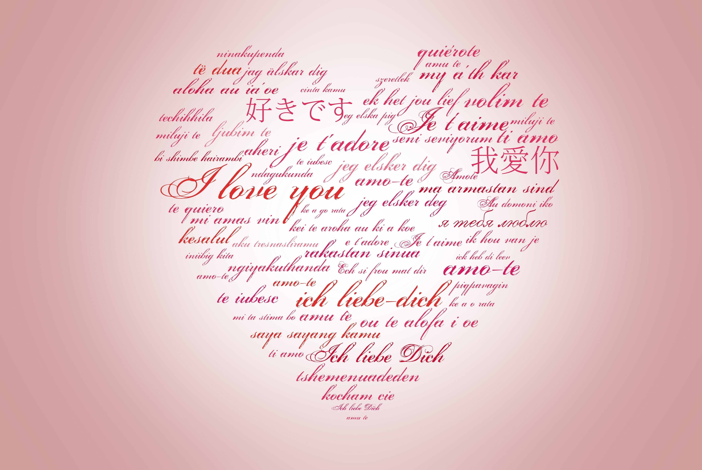

Ek chhota sa jugaad, bada sa impact. Overthinking ko maaro bye-bye aur life ko karo restart!
Ek shayari ki tarah shuru hota hai, ek tooti hui kahani ban ke khatam hota hai !!!
Wait karo, doston—agli blog post aa rahi hai, full-on dhamaka leke! Stay tuned for more masaledar content!
So, yahan tak aa hi gaye ho? Great! Welcome, dost—main hoon ओमदेवसिंहजी झाला, ek proud Gen Z jo apni overthinking ko art form bana chuka hai. Matlab, agar overthinking ke liye Oscars milte, toh main abhi red carpet pe photos le raha hota! But chhodo, hum baat karte hain tumhare dimaag ke baare mein—kyunki let's be real, kabhi kabhi yeh supercomputer lagta hai, aur kabhi Windows XP ke tarah hang kar jaata hai.
You know those moments when you feel like life bas stuck ho gayi? Kaam kar rahe ho, but lagta hai progress zero hai? Haan haan, sach bolo—aisa hota hai na? Toh tension mat lo, I'm here with thoda gyaan, thodi jugaad, aur ek dose of sarcasm to give your brain the kickstart it needs.
Subah uthte hi apne aap se bolo: “Aaj ka din mast hone wala hai!” Aur raat ko, bed pe girne se pehle, apne dimaag mein ek sawaal daalo: “Aaj kya achha hua?” Focus on the good things, appreciate them, aur repeat karo. Yeh chhoti cheezein tumhare brain ke mood ko lift karti hain—jaise mom ke hath ka garam garam paratha mood lift karta hai.
Imagine ek labrador jo ball ke piche pagal ho raha hai—focused, determined, aur pura energy us ball pe. Same goes for tumhara brain! Tumhare paas ek “ball” hona chahiye—ek goal, ek idea, ya kuch achieve karne ka purpose. Ball ke bina, tumhara brain idhar udhar negativity mein bounce karega. Toh apne aapko ek ball do, aur phir dekho kaise apna dimaag uske peeche bhaagta hai—jaise traffic mein auto us ek khali gap ke peeche bhaagta hai.
Kya chahiye tumhe? Ek baar decide karo, aur phir roz likho. Haan, haath se likho—tumhare brain ko clearly signal milta hai jab tum physically apne goals ko likhte ho. Phir usse loudly read karo do this every day—it's like planting a seed in your brain.. Over time, tumhara subconscious tumhare goals ko apne core system mein embed kar lega. Bas karo yeh roz—aur dekho kaise tumhare dreams ka safar shuru hota hai.
Lastly, random thoughts ko hawa mein udne do.
Tumhare dimaag mein jo pointless overthinking aata hai na, usse mat pakdo. Focus karo un cheezein par jo matter karti hain—aur baaki nonsense ko bhool jao. Life mein clarity chahiye na? Bas apne thoughts ko filter lagao.
The bottom line? Tumhara brain ek full-power supercomputer hai—bas tumhe usse sahi instructions dene aana chahiye. Thoda bhi effort lagao, aur dekho negativity kaise slow-motion mein fade hoti hai.
Hey there! Sab kuch theek? Sab kushaal-mangal? Welcome back to my blog—aapka apna comfort zone for heartfelt stories and relatable moments. Aaj ka topic isn't your usual happy-ending love story; it's about a phase in life that is equally magical yet deeply melancholic. So, chalo suru karte hain...
Ek ladka tha, jo apne aap mein poora tha—smart, egoistic, aur immensely fearless. He was the quintessential overachiever—top of his class, admired by teachers, and the kind of person whose aura turned heads wherever he went. Uska charm aur confidence aisa tha ki ladkiyan usse hamesha propose karne ki try karti thi, but uska hamesha ek hi jawab tha: No. Wealth wasn't his world, but he was capable enough to dream big and achieve bigger. He wasn't a materialistic guy, yet his intellect and personality were wealth of their own.
Phir ek din, out of nowhere, his singlehood took a surprising turn. But this wasn't a fairy tale—it was more like destiny flipping the page of his life.
She entered in his life, but ek silent storm ke tarah. She wasn't someone he'd ever noticed before. For years, they existed in the same space, shared the same surroundings, but ek dusre se kabhi baat tak nahi hui thi. Until one day—without any grand prelude, he texted her. Ek baar sochiye, ek random text aur kahani ki shuruwaat. Strange? Destiny often works in strange ways.
Unka bond natural tha—kuch fake nahi, kuch forced nahi. Pehli baar us ladke ne apne guard ko neeche kiya. They started sharing snippets of their lives—dreams, fears, spirituality, aur woh chhoti-chhoti baatein jo dil ko chain deti hai. Unhone ek dusre ko sirf samjha nahi, mehsoos kiya.
When he saw her, it wasn't just a sight—it was an experience. Uski innocent eyes jo kuch bolti thi, woh chubby cheeks jo ek temptation create karti thi. Public mein kuch karna awkward tha, but he couldn't help himself from imagining pinching them just once.
Ek din, she gathered the courage to say it: “OYY SUNN NA! I want to date you.” Nervous, vulnerable, yet hopeful. Uska confession was raw and heartfelt. And for the first time in his life, he said yes—breaking his pattern of rejecting love.
Unhone shayari aur poems mein apne jazbaat ko dhalna shuru kiya. This wasn't just about expressing himself—it was about entering a new world, one where he truly began to understand the depth of emotions.
As he poetically described:
Kya pyaar asaan hota hai? Bilkul nahi. Arguments hue, misunderstandings bade, aur pyar ka ultimate test shuru hua. Aur ek din—she told him she didn't love him anymore. Words hit harder than any physical wound ever could. She confessed she liked someone else.
Imagine that moment. A love so pure being ripped apart. Uska dard soch kar hi dil baith jata hai. In anger aur frustration, he broke his hand. But emotional wounds? Woh kabhi heal nahi hote.
He still doesn't know the truth. Kya woh sach mein kisi aur ke saath chali gayi? Ya kuch aur baat thi jo kabhi saamne nahi aayi? Yeh unanswered questions ek khali jagah chhodte hain—ek aisi jagah jo kabhi bhar nahi sakti.
Nahi..after 626 days and 15,024 hours, he decided to break the silence. His hands trembled, not out of fear, but from the weight of everything unsaid. He typed a message—just one—and hit send.
The text read, "Hey..."